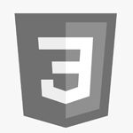

TECNOLOGIAS


Sou desenvolvedor de software com foco em desenvolvimento Front-End e estudante de ciência da computação. Gosto muito de Design, principalmente design de produtos, trilho meu desenvolvimento em aplicações focadas em usabilidade e simplicidade.
Minha experiência como desenvolvedor me proporcionou oportunidades bacanas, ser finalista da Campus Mobile (Proporcionada pela USP e Net Claro Embratel), atuando na projeção e desenvolvimento de uma aplicação mobile friendly. Também pude participar da concepção de um Design System empresarial atuando no desenvolvimento de componentes.
Esta foto foi tirada em um meetup que apresentei na empresa Neogrid, contando um pouco sobre o trabalho e desenvolvimento utilizando StencilJS para escrever Web Components, com o objetivo de criar os componentes de um Design System.